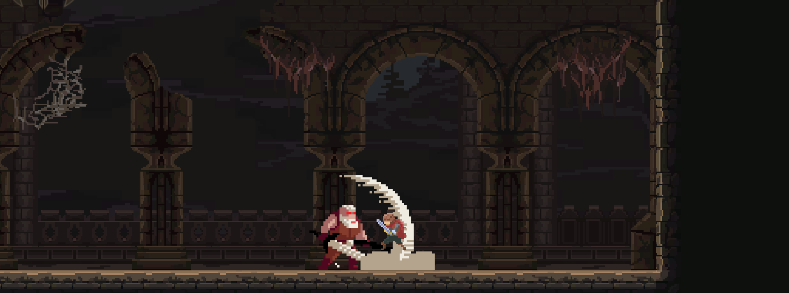

Education
Grado en Contenidos Digitales Interactivos.2019 - Today
ENTI - Universitat de Barcelona.
Languages
Catalan - Native Language
Spanish - Native Language
English - B2 Level
Tools I work with
Unity, Unreal, Photoshop, Jira, Excel, Android Studio, Maya, 3DS Max.
Abilities
- Good teamwork and a great teammate
- Strong communication skills
- Great analysis and problem solving
- Optimistic and empathic
- Fast learner
- Organized
- Responsable
Additional education
CFGS Animación de actividades físicas y deportivas. 2016 - 2018
Jesuïtes Bellvitge - Centre d'Estudis Joan XXII.
CFGM Salvamento y Socorrismo. Ciclo Inicial. 2019
INS Náutica de Barcelona.
Projects
- Tri-Heroes -
gametriheroes.itch.io/triheroes
Tri-heroes is a game that explores and tries to give a twist to the mechanics and dynamics of party RPGs and turn-based strategy games.
Tri-heroes is currently under development. All of its updates can be found on the social media pages of the game.
- Inner Rotation
- nibzstudio.itch.io/inner-rotation
Inner rotation is a First Person, 3D, Puzzle, Platformer game wich tries to explore the dynamics about rotations in a 3D world.
- Abyssal Ages -
sanfa.itch.io/abyssalages
Abyssal Ages is a 2D Adventure Game wich tries to explore the mechanics of going back in time in a world infested with monsters.

- Podium -
Steam Workshop for Portal 2
Podium, is a map for Portal 2 where I tried to create a level using the geometry of my workplace, Podium Viladecans.
About me
I am passionate about video games and I thrill about game design and level design. I enjoy crafting engaging experiences that challenge players and designing environments inspired by real locations and structures. Furthermore, I like challenges and grinding towards my objective.
I am a sporty person who has been working as a gym trainer and a pool lifeguard for the last four years. I would like to change the direction of my professional career and start a journey into de videogame industry.
Contact